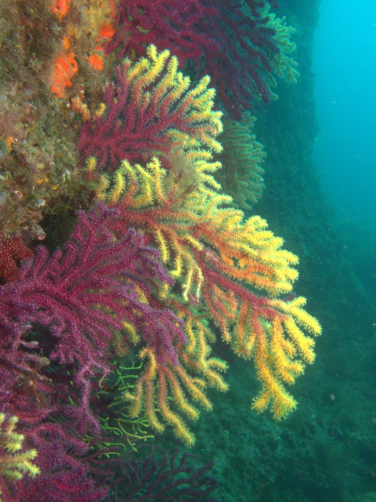

Îles Medes
Costa Brava, Espagne · plongée, snorkeling

Réserve marine protégée au large de l'Estartit : mérous curieux et grottes, référence de la plongée en Méditerranée.
- Lieu
- Costa Brava, Espagne
- Niveau
- Débutant
- Activités
- plongée, snorkeling
- Type d'eau
- Mer / océan
- Coordonnées
- 42.05, 3.23 (position approximative du secteur)
Dangers à connaître
- Trafic de bateaux en surface.
- Grottes : reste avec un guide.
Le conseil d'Ocean Buddy
Réserve protégée : nombre de plongeurs limité, réserve tôt.
Ouvrir dans Ocean Buddy Télécharger sur l'App Store
Source : Description historique Ocean Buddy · vérification externe en attente.